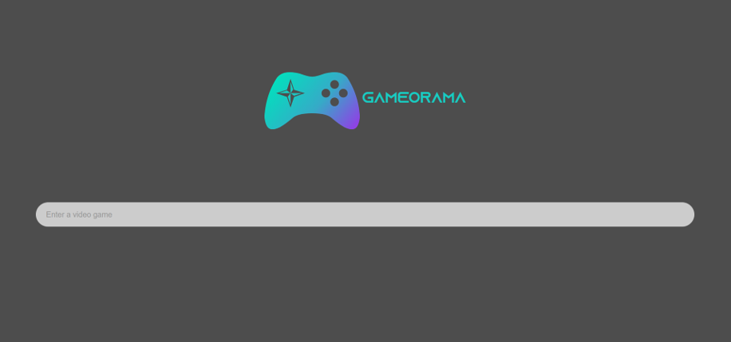

"Gameorama" is a project that I realized as part of the Check24 IT scholarship.
Based on my idea of making a tool that allows the user to discover new video games based on their favourite one, my team started working on the implementation.
I coded the backend, which included using an API to get data and writing the Python scripts to calculate similarity between games. Besides that, I designed the logo for gameorama.
